Leadership Team
The leadership team is responsible for the running of our chapter.
- Manhood
- Democracy
- Humanity
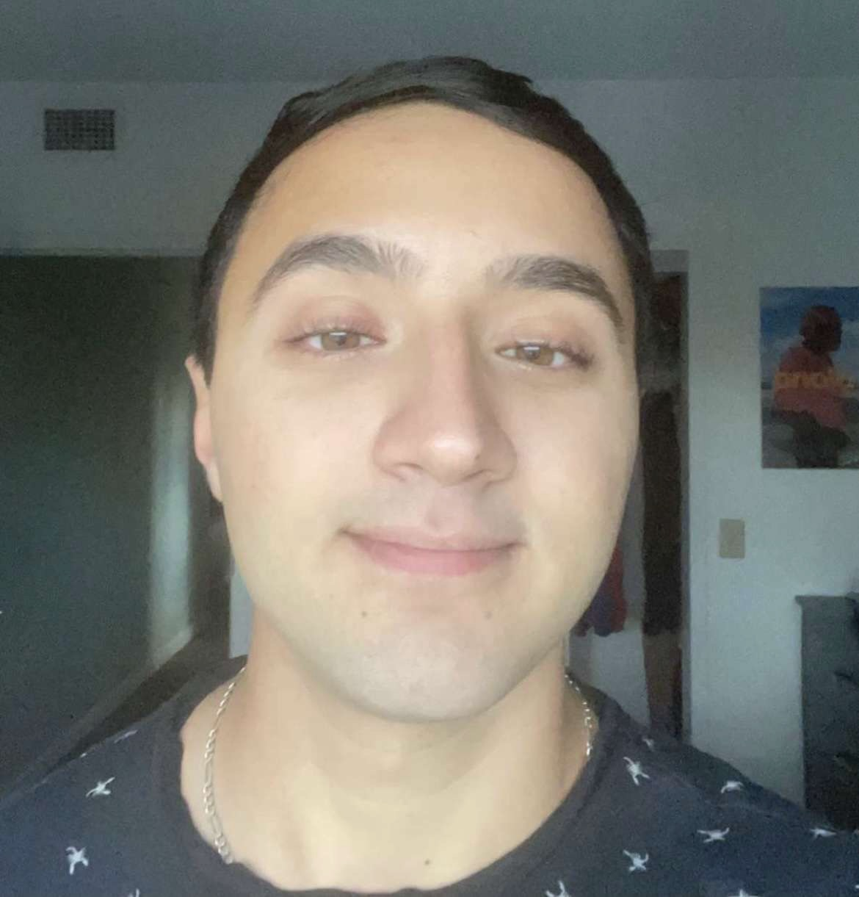
Prior | Parsa 'Backdoor' Lotfi
The leader of the chapter. The Prior is responsible for the overall function of the chapter and any administrative items that follow. It is his job to meet with members of the administration and act as a liaison between the chapter and outside organizations.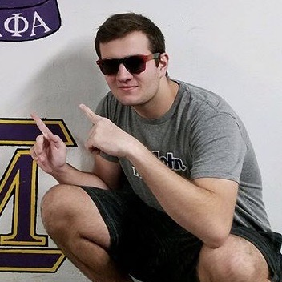
Vice-Prior | Rorry 'Dangle' O'Connor
Second in command of the chapter following the rule of the prior. The Vice Prior manages all of the main internal aspects of the chapter such as the various chairs and positions. He is also in charge of risk management.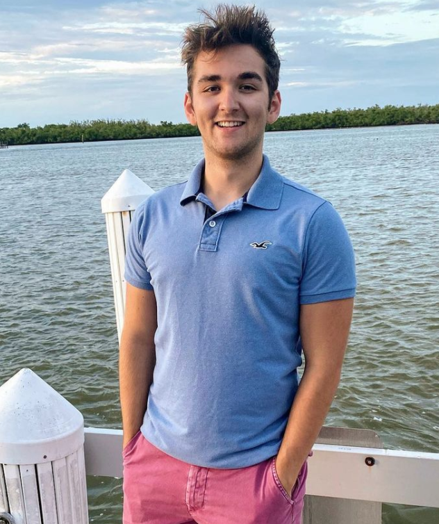
Exchequer | Reid 'Phillips' Campolong
The Exchequer is in charge of the chapter's finances and ensures that we are on budget.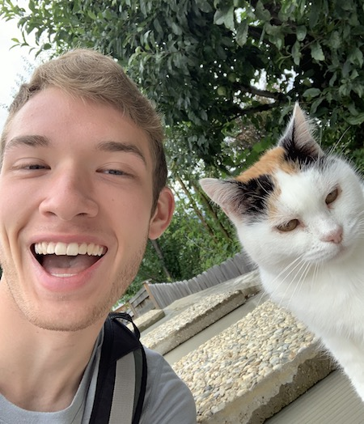
Recorder | Drew 'Auto' Laurin
The Recorder is in charge of keeping our meeting minutes, as well as reporting back to our HQ monthly.
Social Chair | Christian 'Chef' Hess
The Social Chair is in charge of setting up our general social events. This mostly includes setting up events with outside organizations.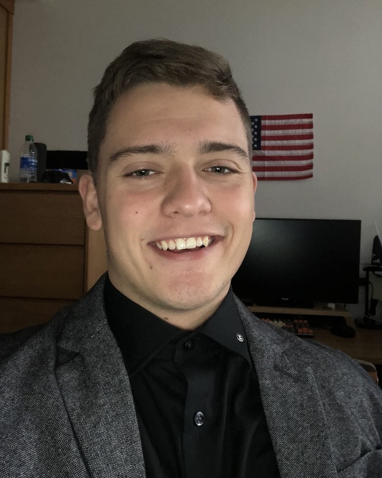
Candidate Educator | Tyler 'Dice' Barnes
The Educator is in charge of our new member process. They teach the candidates about the Fraternity's history and oversee the Big/Little Brother pairings.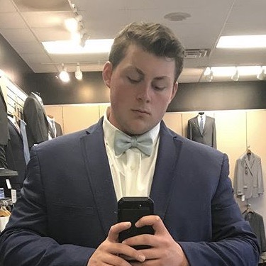
Historian | Mitch 'Toe-B' Schaur
The Historian is responsible for maintaining the history of the chapter and running all chapter rituals such as Big/Little and Initiation.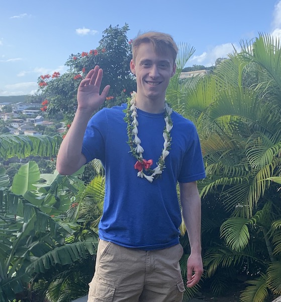
Brotherhood Chair | Nathyn 'Fydo' Castor
The Brotherhood chair's job is to foster a connection between members of the chapter. The brotherhood chair works towards instilling and maintaining that spirit of fraternity. The major events put on by this chair do an excellent job at working towards this goal. And the smaller events, while less attended, are easily as impactful to those that do attend.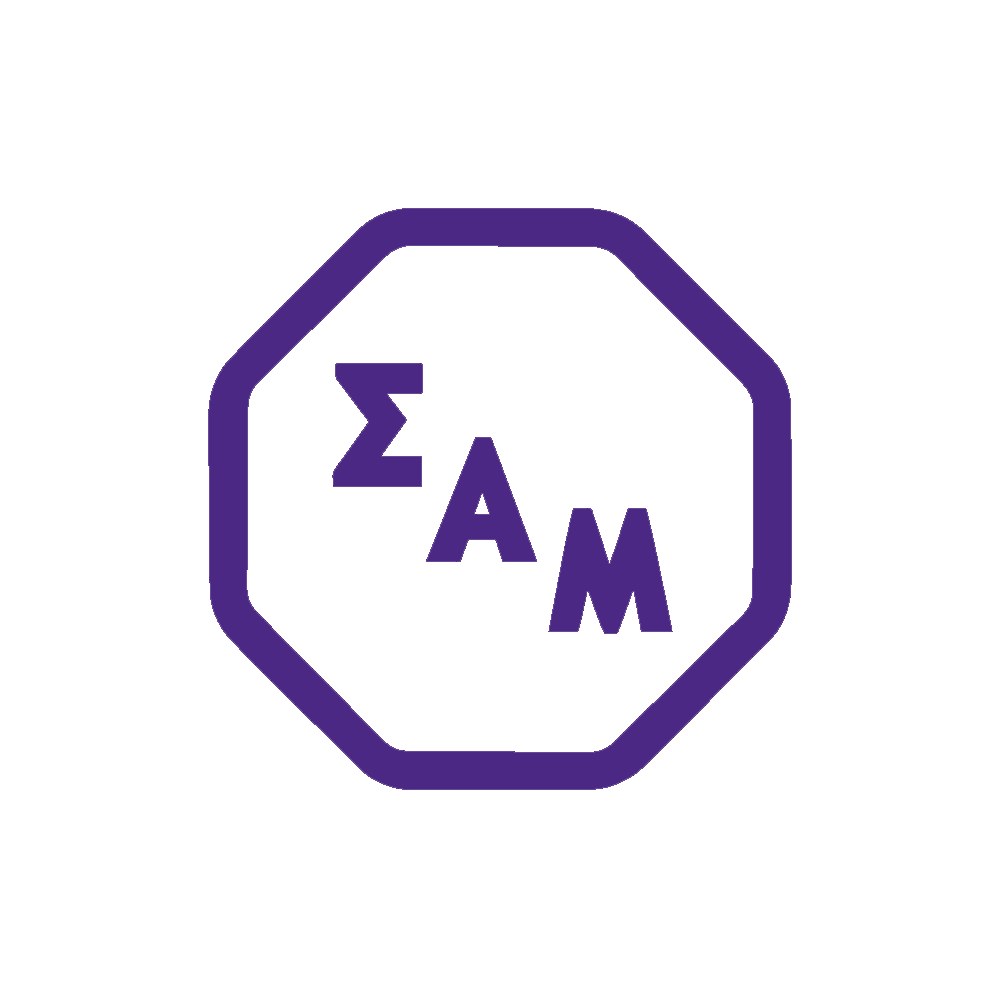
Alumni Recorder | Ryan 'Lazlo' Stevens
The Alumni Recorder's job is to build and improve our relationship with alumni, and keep a sense of brotherhood between us and those who have graduated.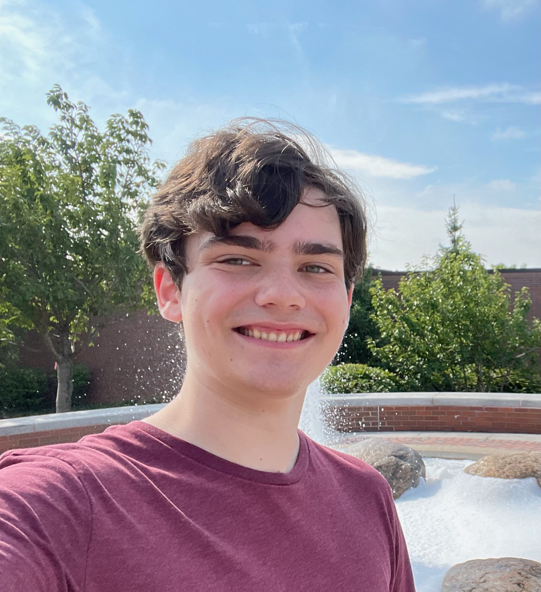
Philanthropy Chair | Robert 'Python' Walling
The Philanthropy Chair's role in the chapter is to plan and carry out events to spread awareness and support various causes by donating funds we raise from these events. The main organizations we support and donate to are The Judy Fund, The Make-A-Wish Foundation, and Rochester Regional Health.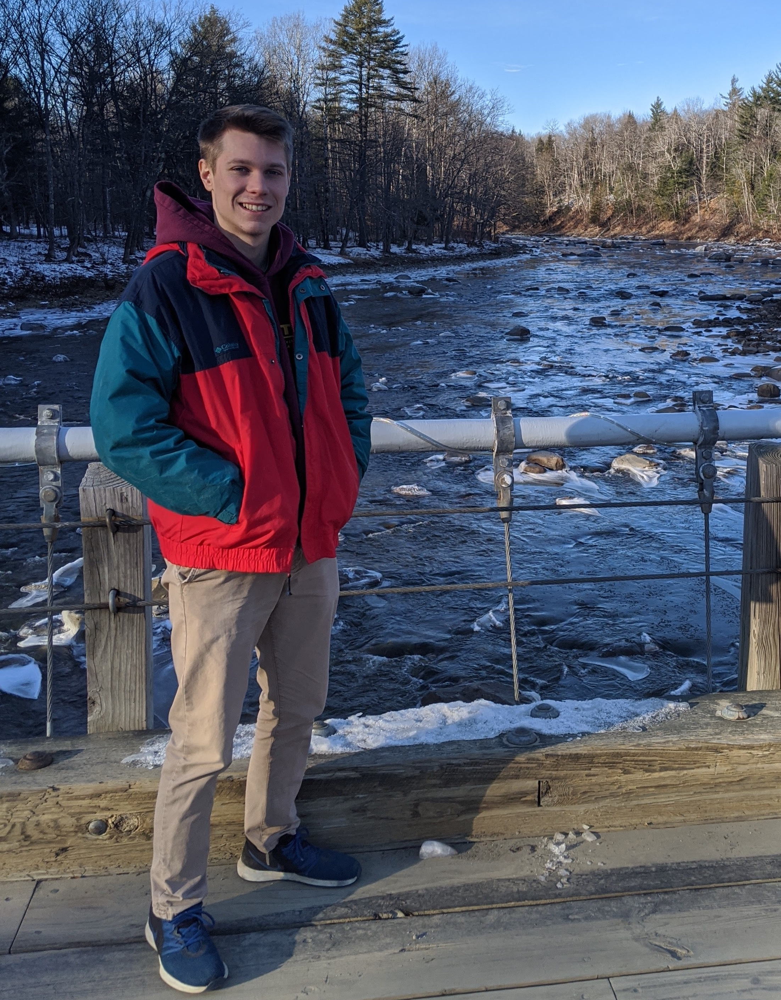
Community Service Chair | Joe 'Hot-Rod' Crandall
The Community Service Chair position is in charge of tracking and assigning community service hours, as well as planning some of our smaller community service events.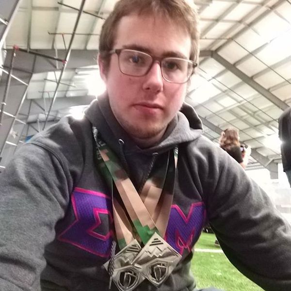
Public Relations Chair | Max 'Boney' Cole
The Public Relations Chair is responsible for running the chapter's social media accounts as well as maintaining robust relationships with other organizations on campus.
Recruitment Chair | Christian 'Chef' Hess
The Recruitment Chair's job is to lead our recruitment of new members, both during rush month and throughout the semester.
Webmaster | Robert 'Python' Walling
The Webmaster is in charge of updating the website and managing the chapter's emails.
Sergeant at Arms | Joe 'Hot-Rod' Crandall
The Sergeant at Arms is concerned with keeping order at meeting and serves as the chapter parliamentarian.